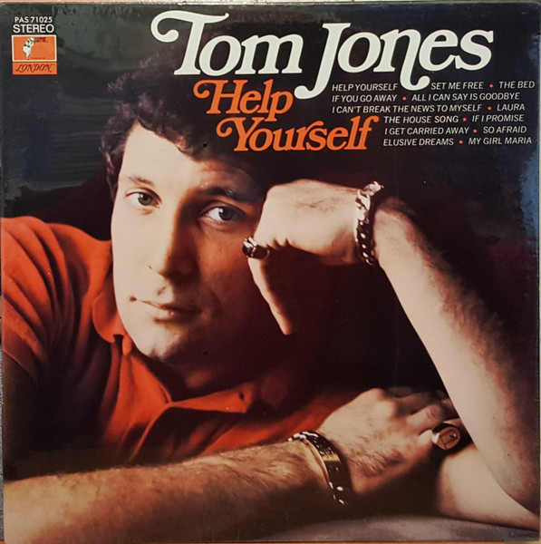

LP
Help Yourself
Tom Jones
Media: VG · Sleeve: G+
CA$6.00
Discogs SuggestedCA$14.91
Discogs MedianCA$14.91
Discogs HighCA$14.91
- Physical Copy ID
- BB-LP-166
- Year
- 1968
- Label
- Parrot, Parrot
- Catalog #
- PAS 71025, PAS. 71025
- Country
- CACanada
- Genre / Style
- Pop · Vocal